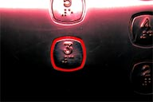

Verificatelo consultando le domande elencate:
Nelle risposte che seguono, abbiamo sintetizzato i principali adempimenti previsti, a carico del Proprietario dello stabile o del suo legale rappresentante, dal D.P.R. 30 aprile 1999 n. 162 e successive modifiche e integrazioni.
Sapete cosa fare per la messa in esercizio di un nuovo ascensore?
La messa in esercizio degli ascensori e dei montacarichi deve essere comunicata al Comune competente per territorio, entro dieci giorni dalla data della dichiarazione di conformità dell’impianto rilasciata dall’installatore, indicando:
- l’indirizzo dello stabile ove è installato l’impianto;
- la velocità, la portata, la corsa, il numero delle fermate ed il tipo di azionamento dell’impianto;
- il nominativo o la ragione sociale dell’installatore dell’ascensore o del costruttore del montacarichi, ai sensi dell’art. 2 comma 2 del Decreto del Presidente della Repubblica 24 luglio 1996, n. 459; - la copia della dichiarazione di conformità CE dell’impianto, rilasciata dall’installatore;
- la ditta abilitata ai sensi della Legge 5 marzo 1990 n. 46, che ha ricevuto l’incarico di effettuare la manutenzione dell’impianto, la quale dovrà provvedere a mezzo di personale abilitato e fornito di certificato rilasciato dal Prefetto;
- il soggetto (Azienda Sanitaria Locale “A.S.L.” o Organismo Notificato) che ha accettato l'incarico di effettuare le verifiche periodiche sull’impianto.
Avete affidato, così come previsto dall’art.13 del DPR 162/99, l’incarico per
l’espletamento
delle verifiche periodiche?
 Vi ricordiamo che gli impianti devono essere sottoposti a una verifica periodica, ogni due anni, da parte dell’A.S.L. o da un Organismo Notificato. Al riguardo, il proprietario dell’impianto o il suo legale rappresentante devono garantire il rispetto di tale periodicità. Se, a seguito dell’ispezione periodica viene rilasciato un verbale con esito negativo, il Sindaco del Comune di appartenenza, informato dal soggetto incaricato della verifica, dispone il fermo dell’impianto. Nel caso in cui, nonostante l’ordinanza di fermo, l’ascensore venga mantenuto in esercizio, la polizia amministrativa procederà a carico del Proprietario o del suo legale rappresentante, ai sensi dell’art. 650 del C.P.. Se i lavori eseguiti per rimuovere le prescrizioni evidenziate in sede di verifica periodica, riguardano componenti di sicurezza o vanno a modificare elementi legati alla natura progettuale dell'impianto, il Proprietario dovrà richiedere una Verifica straordinaria per la rimessa in funzione dell'ascensore.
Quando deve essere richiesta la verifica straordinaria?
Il proprietario dell’impianto o il suo legale rappresentante devono richiedere la verifica straordinaria nei seguenti casi:
- a seguito di verbale di verifica periodica con esito negativo, dopo aver ottemperato a tutti i lavori necessari;
- dopo un incidente, anche se non seguito da infortunio, con immediata sospensione dell’esercizio dell’ascensore;
- dopo ogni modifica costruttiva dell’impianto, non rientrante nell’ordinaria e straordinaria manutenzione (ad esempio: sostituzione del macchinario, del gruppo cilindro pistone, del quadro di manovra, delle porte di piano, della cabina, del cambiamento di velocità, della portata e della corsa).
La manutenzione dell’impianto è affidata ad una Ditta Specializzata?
Il proprietario dell’impianto o il suo legale rappresentante sono tenuti ad affidare la manutenzione di tutto il sistema dell’impianto a ditta specializzata e, soprattutto, munita di abilitazione in base al D.P.R. 24 dicembre 1951 n. 1767 e recepita anche dal D.P.R. 30 aprile 1999 n.162
Avete provveduto ad autorizzare l’esecuzione dei lavori segnalati dal Manutentore
o
dall’Organismo incaricato delle verifiche periodiche?
Vi evidenziamo che l'art.15 comma 6 del D.P.R. 162/99, impone al proprietario dell' impianto o al suo legale rappresentante di provvedere prontamente agli interventi segnalati dal Manutentore e/o dall’Organo di Controllo. L’effettuazione degli interventi segnalati dal Manutentore e/o dall’Organo di Controllo è condizione essenziale per assicurare il corretto funzionamento degli impianti e soddisfare al meglio le legittime aspettative degli Utenti.
Cos’è il libretto dell’impianto?
Il libretto dell’impianto, rilasciato dall’installatore ai sensi del DPR 162/99, è il documento riportante, tra l’altro, le principali caratteristiche dell’impianto. Deve, inoltre, contenere:
- copia della dichiarazione di conformità,
- copia della comunicazione del Proprietario al competente Ufficio Comunale relativa alla messa in esercizio,
- copia della comunicazione del competente Ufficio Comunale inerente il numero di matricola assegnato all’impianto,
- i verbali delle verifiche periodiche biennali e straordinarie, gli esiti delle verifiche di manutenzione.
Per gli ascensori collaudati e messi in esercizio prima dell’entrata in vigore del D.P.R. 30 aprile 1999 n.162, restano validi i libretti di immatricolazione originari. Il proprietario dell’impianto o il suo legale rappresentante devono assicurare la disponibilità del libretto ai soggetti incaricati delle verifiche previste dalla Normativa.
E’ presente la targa in cabina?
Il proprietario dell’impianto o il suo legale rappresentante devono farsi carico di esporre in cabina le avvertenze per l’uso ed una targa recante le seguenti indicazioni:
- l’installatore e numero di fabbricazione,
- il numero di matricola attribuito dal competente Ufficio Comunale,
- la portata massima espressa in chilogrammi,
- il numero massimo di persone
E i divieti?
Vi ricordiamo che l’uso dell’ascensore e dei montacarichi è vietato ai minori di 12 anni, non accompagnati da persone di età più elevata.
Per ulteriori chiarimenti potete contattare i nostri Uffici della Direzione Generale
telefonando allo:
3208672703
oppure inviando un e-mail a:
INFO@ERAASCENSORI.IT
Un nostro incaricato sarà a Vostra completa disposizione per rispondere con professionalità e
cortesia a tutte le Vostre domande.